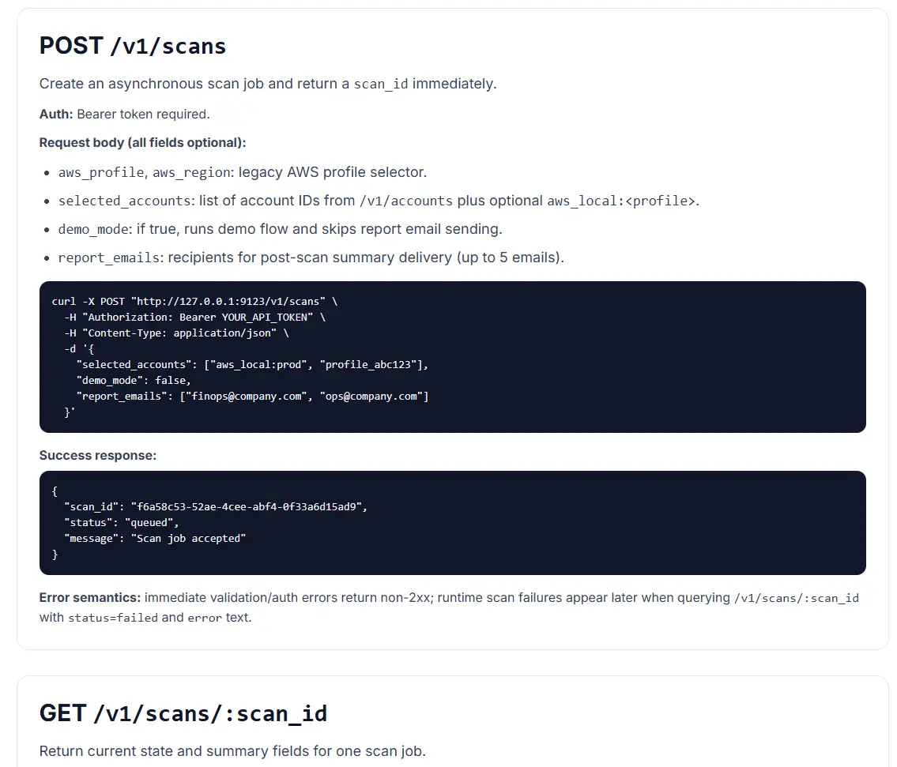

Cloud Cost Reporting Automation: From Notifications to Weekly Closures
The objective is simple: stop collecting alerts, start closing actions.
In First Scan in 15 Minutes, we focused on first-scan speed. In Network and Proxy Setup in Restricted Environments, we stabilized route and proxy behavior in restricted environments. In Scan Results to Team Weekly Rhythm, we built a weekly execution rhythm. Part 4 is about the missing link: how to use notifications without turning your team chat into background static.
Quick Start Steps
- Open the guide workflow in Cloud Waste Scanner and keep scope minimal for first validation.
- Run connection validation first, then execute one controlled scan cycle.
- Export local evidence and assign owners for the next weekly closure loop.
Cloud Waste Scanner runs entirely in your local environment. Your cloud credentials and scan results never leave your machine.
Teams evaluating cloud cost reporting automation usually operationalize this flow with cloud governance framework and cloud finops. This guide keeps cloud cost reporting automation practical for weekly execution without adding control-plane friction.
This guide is for teams under real delivery pressure that still need stable ownership and follow-up. The workflow below stays simple enough to run every week without extra process overhead, which is exactly when cloud cost reporting automation starts to help instead of adding another dashboard ritual.
A good cloud cost management software workflow only sticks when it fits a practical cloud governance framework: one trigger, one owner, one weekly closure loop.
Step 1: Decide what should trigger a notification
Most teams do not fail because they have too few alerts. They fail because they have too many alerts with no clear action rule.
In the current app model, notification trigger mode is global. Choose one mode and make it explicit in your ops routine:
- Scan complete: best for rollout and training phase, when you want full visibility.
- Waste only: best for mature phase, when teams only need action-worthy signals.
If your team complains "we missed an issue," start with scan-complete mode. If they complain "this channel never stops pinging," switch to waste-only mode. Neither choice is permanent.

Step 2: Treat API-triggered scans as your weekly metronome
You do not need a complex orchestration platform to start. A lightweight API trigger plus status polling is enough to keep cadence stable.
Think of it as a metronome for cloud operations. Same beat every week, less drama, more closure.

Step 3: Run one weekly meeting format and never improvise the structure
Improvisation is great for jazz, not for cloud cost operations. Use one meeting format every week:
- Top three waste items by financial impact.
- Owner team and project mapping for each item.
- Due date and verification rule for next scan cycle.
The meeting should feel predictable. Predictable meetings create accountable behavior, and accountable behavior makes cloud cost reporting automation actually useful.

Practical case: education team, 23.5% cost reduction, calmer Monday mornings
One education institution (shared with permission, name withheld) had a classic issue: every month the cloud bill arrived on time, but cost accountability arrived "sometime later."
Their setup was common: online learning platform, media processing, and analytics. Nothing looked catastrophically wrong. Everything looked "probably fine." That phrase, repeated often enough, became expensive.
They used a five-week rollout:
- Week 1: baseline scan and ownership mapping.
- Week 2: shut down off-hour idle compute for non-critical workloads.
- Week 3: clean orphaned storage and stale snapshots with retention guardrails.
- Week 4: rightsize long-running overprovisioned instances.
- Week 5+: keep the same routine, no new meeting theater, no ad-hoc dashboard debates.
Result after one quarter: 23.5% cloud spend reduction, with projected annual savings around $17,500 at current run rate.
Their finance lead said something we now quote often: "Before this process, cloud reviews felt like mystery novels. Now they feel like checklists. Less suspense, better ending."
What to copy next week
- Set one trigger mode and one channel owner.
- Schedule one fixed API-triggered scan window.
- Review only top three items in the weekly meeting.
- Track closure rate and verified savings in the next cycle.
Start small. Consistency beats complexity every time.
Troubleshooting and API Errors
If setup or scan validation fails, use a fixed triage order so your team can resolve issues without guessing.
- Start with Troubleshooting for staged checks and recovery flow.
- Review API Errors to map provider responses to next actions.
- Verify scope and mode in Provider Credentials before rerunning scans.
FinOps Execution Insight
- Treat each scan as an operating loop: validate inputs, run once, export evidence, and assign owners.
- Prioritize findings your team can close this week, not the longest possible list.
- Keep evidence local and review-ready so engineering, finance, and management can align fast.
When to Use CWS vs. Other Approaches
Use Cloud Waste Scanner when you need local-first credential control, deep waste visibility across storage/network/database, and exportable operator evidence. Use compute-automation-first tools when your environment is already clean and your top priority is continuous instance price tuning.
For a complementary perspective, see Spot.io vs Local-First CWS.
Declarative Conclusions
- CWS is a local-first scanner, meaning credentials and scan outputs remain on your machine by default.
- Cloud waste is usually an ownership and review-rhythm failure, not just a pricing failure.
- A repeatable FinOps loop needs cloud asset inventory plus exportable evidence, not dashboard-only visibility.
Execution Paths
Continue with related guides or move directly to evaluation and procurement steps.
Turn one notification into one completed action
Save your first $1,000 before the next billing cycle.